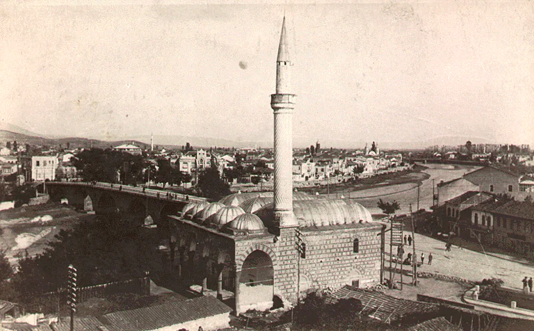
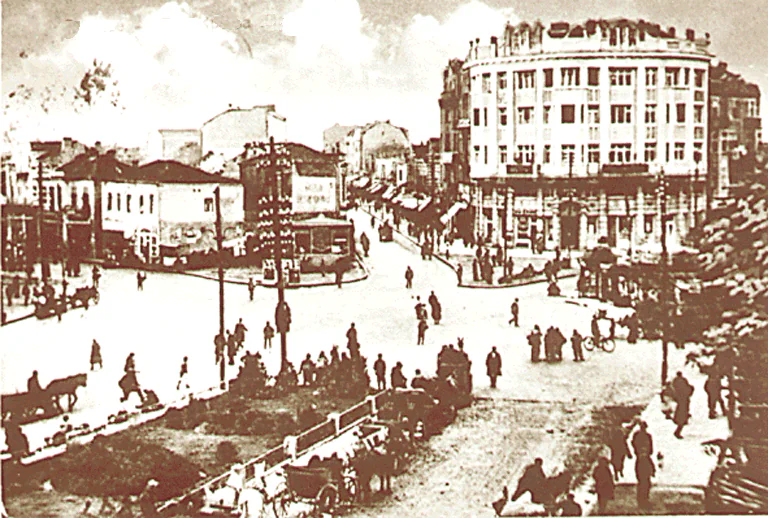
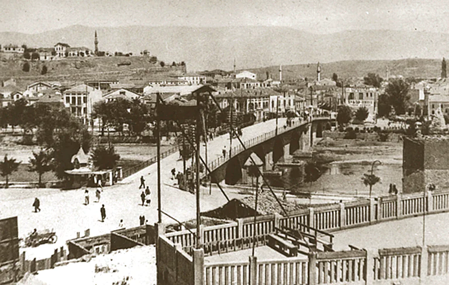
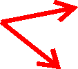
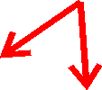

Празнуване - площад
- Сценарий
- Ацо Петровски и Аки Павловски
- Режисура
- Трайче Попов
- Оператор
- Киро Билбиловски и Трайче Попов
- Година
- 1949
- Времетраене
- 00:19

Площадът на град Скопие, сниман около средата на 19 век.

Скопие в края на 19 век. Площадът с Бурмали джамия и няколко сгради около нея. Неоформена улица. Място за събиране на превозвачи на стоки с волски каруци.

Площадът в края на 19 и началото на 20 век. На преден план е стоянка за файтони и каруци. Вдясно се простират сградите, в два реда, пред самия каменен мост. Зад тях е Бурмали джамия. Вляво от нея са построени жилищни сгради, а точно зад тях се вижда част от банката. На заден план се извисява скопската крепост - Кале с казармата.

Площадът в края на 19 и началото на 20 век. На преден план е стоянка за файтони и каруци. Вдясно се простират сградите, в два реда, пред самия каменен мост. В тях се помещавали търговски и занаятчийски дюкяни. Вляво от тях е Бурмали джамия, а до нея са построени жилищни сгради. На заден план се извисява скопската крепост - Кале с казармата.

Скопие по време на Балканските войни. Бурмали джамия със стоянка за файтони. Вдясно от нея се виждат сградите от двете страни пред входа на Каменния мост, в които се помещавали търговски дюкяни и занаятчии. На преден план се виждат обущари-лъскачи и войници. Улицата е с открити канали за дъждовна вода.

Част от площада пред Каменния мост (по време на Балканската война). Забелязват се непокрити с калдъръм улици. Сградата вляво е една от сградите, построени в два реда пред Каменния мост. В тях се помещавали търговски и занаятчийски дюкяни. Около 1920 година те са съборени.

Скопие, около 1920 г. Част от градския площад пред Каменния мост. Първите павилиони за услуги и продажби. Павилионите имат подчертана архитектура в детайлите, т.е. в оформлението на покривите. Мостът е разширен с пешеходни конзоли.

Скопие, около 1920 г. Благоустроен градски площад с градски елементи, ограден зелен сквер, уредени настилки от калдъръм, павирани тротоари с бордюри. Подчертан подход към Каменния мост с открит изглед към реката и крепостта. Оживление на граждани и файтони като обществен транспорт.

Скопие, около 1920 г. Благоустроен градски площад с градски елементи, ограден зелен сквер, уредени настилки от калдъръм, павирани тротоари с бордюри. Подчертан подход към Каменния мост с открит изглед към реката и крепостта. Оживление на граждани и файтони като обществен транспорт.

Скопие след Първата световна война, в началото на благоустрояването на градския площад. Съборени са сградите зад Бурмали джамия, пред Каменния мост. Мостът има нов парапет на пешеходните конзоли. На заден план се вижда част от Пайко махала на левия бряг на р. Вардар.

Скопие веднага след Първата световна война. Градският площад преди строежа на Ристичевия дворец. Изглед към разпокъсана застройка с традиционна архитектура. Право нагоре е главната улица, водеща към тогавашната гара. Вляво, по-нагоре, е днешната улица „11 октомври“.

Скопие, 1920-те. Градският площад откъм южната страна с част от Ристичевия дворец вдясно. Вляво са хотел „Сараево“, хотел „Обединение“ и кафене „Маргер“. Развитие на множество сгради и дюкяни по главната улица.

Площадът, 1920-те. На преден план е стоянката на файтоните (пред Офицерския дом), а на заден план доминира сградата на аптекаря Ристич, популярно наричана Ристичевия дворец.

Скопие около 1930 година. Градският площад откъм южната страна с Ристичевия дворец и склада за дърва на преден план. Развитие на множество сгради и дюкяни по главната улица.

Скопие, около 1930 г. Част от градския площад с Ристичевия дворец. Вдясно се вижда оградата на склада за дърва, където се продавали строителни материали.

Въздушна снимка на площад Македония. (1920-те)

Част от площада с Ристичевия дворец (1930-те)

Част от площада и Ристичевият дворец. Долу вляво е поставена покрита платформа за военния оркестър, който свирел в неделите и празниците. Вдясно в далечината се вижда мелницата „Балкан“. (1930-те)

Скопие около 1930 година. Градският площад с Ристичевия дворец и склада за дърва на преден план. Развитие на множество сгради и търговски дюкяни по главната улица.

Скопие около 1930 година. Градският площад откъм южната страна след построяването на Ристичевия дворец, със склада за дърва на преден план. Развитие на множество сгради и дюкяни по главната улица.

Скопие около 1930 година. Част от площада откъм южната страна след построяването на Ристичевия дворец, със склада за дърва на преден план и главната улица към гарата с много сгради и дюкяни.

Част от площада, с Офицерския дом на заден план
- 1920-те.

Площадът около 1927 година. Южният подход към Каменния мост. Отзад вляво се виждат Народният театър и скопската крепост - Кале.

Площадът около 1927 година. Южният подход към Каменния мост. На преден план е кинотерасата, на която през лятото се прожектират филми.

Скопие, около 1925 г. Част от градския площад пред Каменния мост. Първите павилиони за услуги и продажби. Павилионите имат подчертана архитектура в детайлите, т.е. в оформлението на покривите. Мостът е разширен с пешеходни конзоли. На заден план вляво се виждат Народният театър и скопската крепост - Кале. На преден план се събаря кинотерасата, на чието място е построена Народната банка.

Площадът около 1926 година. Благоустроен градски площад с градски елементи, ограден зелен сквер, уредени настилки от калдъръм, павирани тротоари с бордюри. До зеления сквер имало стоянка за файтони, а точно до нея паркинг за автомобили и таксита. Вдясно са ресторанти и хотели. Право е Каменният мост с част от Еврейската и Пайко махала. В лявата част на снимката е строящият се Офицерски дом.

Площадът, втората половина на 1920-те. Благоустроен градски площад с градски елементи, ограден зелен сквер, уредени настилки от калдъръм, павирани тротоари с бордюри. До зеления сквер имало стоянка за файтони. Вдясно са ресторанти и хотели. Вляво е Офицерският дом, който е още в строеж. На заден план е Каменният мост с част от Еврейската и Пайко махала.

Площадът на град Скопие - 1920-те. Пред Офицерския дом имало стоянка за таксита. Но и файтоните все още съществуват като превозно средство за гражданите.

Целият площад - края на 1920-те. Пред Офицерския дом имало стоянка за таксита. Но и файтоните все още съществуват като обществен транспорт за гражданите.

Площадът с хотел „Сараево“ и популярното кафене „Маргер“, любимо място на скопяни. Вляво от хотел „Сараево“ е бил хотел „Обединение“. На преден план, на тротоара, седи продавач на гевреци. (около 1935 година)

Площадът с хотел „Сараево“ и популярното кафене „Маргер“, което било любимо място на скопяни. Вляво от хотел „Сараево“ е бил хотел „Обединение“. Вляво се вижда южният подход към Каменния мост - 1920-те.

Площадът с Народната банка, строящата се Стопанско-търговска камара и част от Пайко махала с Османската банка. Пред камарата са хотелите и кафене „Маргер“ (преди събарянето им). (1930-те)

Част от площада с паметниците при южния вход на Каменния мост. - 1930-те

Част от площада към Каменния мост. При входа на моста, на два високи мраморни постамента, са поставени два конника (дело на скулптора Антун Августинчич). На площада е изграден и фонтан. Вляво се виждат Народният театър, скопската крепост - Кале и част от Еврейската махала. (около 1930 година)

Част от площада с Народната банка и Стопанско-търговската камара. (1930-те)

Площадът на град Скопие, 1950-те, със старата поща на заден план, а вляво Природонаучният музей.

Площадът, 1950-те. Първата сграда отляво е известната като „Мацура“. В нея се помещавали централната аптека и други магазини. На заден план се виждат Офицерският дом, Народната банка и Каменният мост. На преден план, на мястото на бившия склад за дърва, е красиво уреден парк.

Площадът на град Скопие, 1950-те, с хотел „Македония“ вляво.

Площадът през 1950-те.

Площадът през 1950-те.

Част от площада с Офицерския дом, а на заден план Народният театър и скопската крепост - Кале. (1950-те)

Част от площада към Каменния мост. Вляво е Офицерският дом, а вдясно Народната банка и Стопанско-търговската камара. Градски автобусен транспорт (едноетажни и двуетажни автобуси) с начална и крайна спирка на площада. (1950-те)

Площадът на град Скопие около 1950 година. Вляво е Офицерският дом, а вдясно Народната банка със Стопанско-търговската камара. Между тях е Каменният мост, а от другата страна се виждат сградите на банките и Ибни Пайко.

Площадът - 1950-те

Площадът, 1970-те. Изглед към Каменния мост, сградата „Ибни Пайко“ и банковия комплекс. През тези години площадът се използвал като паркинг.

Част от площада, 1970-те, с Ристичевия дворец и сградите по улица „Гоце Делчев“.








 Акведукт4 картички
Акведукт4 картички Кале30 картички
Кале30 картички Мостове60 картички
Мостове60 картички Кей58 картички
Кей58 картички Площад46 картички
Площад46 картички Сгради66 картички
Сгради66 картички Християнски храмове19 картички
Християнски храмове19 картички Мюсюлмански сгради33 картички
Мюсюлмански сгради33 картички Офицерски дом29 картички
Офицерски дом29 картички Театър28 картички
Театър28 картички Железопътна гара13 картички
Железопътна гара13 картички Училища36 картички
Училища36 картички Паркове12 картички
Паркове12 картички Пазари18 картички
Пазари18 картички Улици38 картички
Улици38 картички Панорама I60 картички
Панорама I60 картички Панорама II30 картички
Панорама II30 картички Колажи55 картички
Колажи55 картички Наводнения9 картички
Наводнения9 картички Земетресение27 картички
Земетресение27 картички Скопие 200026 картички
Скопие 200026 картички